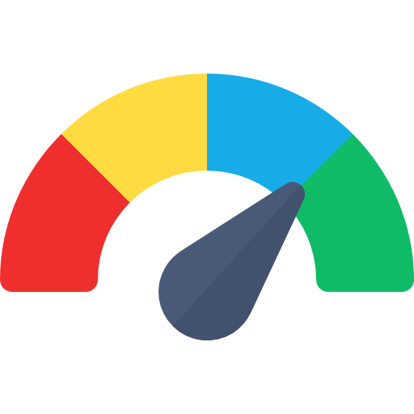

★ 成果專題簡報
FocusLingua
微型多感官學習對話系統
希伯崙 LiveABC 產學實習成果
專題發表人：陳詠芸 Anna Chen
FL
★ 成果專題簡報 ｜ Slide 01 / 12
按鍵盤 [←] [→] 鍵可翻頁 ｜ 點選左側選單可快速跳轉
AGENDA
Content
簡報目錄
01
自我介紹
02
專案動機
03
企業實務痛點與目前困境
04
專案架構與微型展示
05
產品演進脈絡分析
06
雙端實操模擬 LIVE DEMO
07
導入效益分析 (Before vs After)
08
未來擴散性與再精進
09
個人學習成果與反思
10
結尾致謝與交流
簡報目錄 ｜ Slide 02 / 12
兩排縱向順序排列 ｜ 點擊任一項目即可直接跳轉
ABOUT PRESENTER
自我介紹
113中原國小晨間英語課輔老師
中原大學特資中心 英語課輔老師
LiveABC 希伯崙 研發三處實習生 & 人事部工讀
加拿大 Athabasca Univ. VIP Research 實習
ABOUT PRESENTER ｜ Slide 03 / 12
跨域融合背景：英語教學實務 × 數位教材研發 × 特資輔導經驗
MOTIVATION
專案動機：「被忽視的認知極限」
ADHD 孩子的學習阻力，來自於學習教材的程度
常態教材對於ADHD的孩子來說偏難：
1. 需花費比一般人多的時間消化知識
2. 排斥複習與寫作業
1. 需花費比一般人多的時間消化知識
2. 排斥複習與寫作業
市面教材嚴重缺乏階梯式鷹架：主流題庫預設學童具備 15 分鐘連續專注力，對低耐受度學童而言是持續性的挫折打擊。

傳統輔助教學的人力成本高昂，邊際產出卻持續遞減
1. 課輔老師端缺乏合適的輔助工具，導致備課時間佔比過高，造成教育資源嚴重錯配。
2. 學校與機構仰賴大量實習生與志工進行陪伴輔導，一旦人員流動教學質量便難以維繫
MOTIVATION ｜ Slide 04 / 12
直擊現場痛點：高抗拒感、難以消化的常態教材 vs. 居高不下的陪伴成本
MAIN POINTS
目前困境 與 企業實務痛點
深入教學現場與出版體系，剖析課輔出題資訊斷層與長尾特教群體之客觀阻力
目前困境
課輔老師資訊不對稱，客製化成本過高
•
出題標準脫節：課輔老師與原班導師缺乏出題標準同步機制，僅能手握紙本課本摸索，難以精準評估課綱契合度。
•
備課耗時劇烈：針對 1~6 年級不同年齡層手工降難度出題，單次需消耗 1~2 小時備課，邊際產出極低。
•
認知鷹架缺失：傳統紙本人工出題難以動態提供詞根、色彩音節、卡拉OK語音等多元認知鷹架提示。
企業實務痛點
特定族群分散，無法評估確切需求
•
特教學童長尾分散：特殊需求學童散落在常態班級與不同社區課輔站點，出版端缺乏集中樣本蒐集常模。
•
缺乏客觀行為數據：學校與機構缺乏行為數據追蹤工具，僅以考卷成績評斷，無法量化注意力與工作記憶極限。
•
市場教材標準化失衡：主流數位教材均以常態學童為核心，特殊生長年處於輔具邊緣，無法獲得精準階梯支援。
MAIN POINTS ｜ Slide 05 / 12
結構平衡對比：課輔備課時間過長、資訊斷層 ↔ 特定族群分散、缺乏客觀學習反饋
PROJECT & DEMO
解決方案：FocusLingua
雙端分工解耦架構：教師端 Web 智能備課 ＋ 學生端手機 App 專注沙盒
💻 教師端 Web 備課工作站
【教材自動出題】
上傳課綱 PDF / 課文音檔，LLM Prompt 自動萃取關鍵單字，並按 1~6 年級認知階梯自動分流。
【二次審核與把關】
老師能直接微調句子長度、調整輔助提示詞，把關教學品質後一鍵派發。
【特教數據看板】
即時記錄全班學童答題延遲 、猶豫拐點與衝動性亂點，自動導出客觀之個別化輔導報表。
📱 學生端手機 App 專注沙盒
【90 秒沙漏倒數機制】
強制限制單元於 90 秒內結束，以非侵入式漸進圓環替代跳動數字，消解 ADHD 學童之時間焦慮。
【多感官無干擾伴讀卡】
支援 Lexend 抗分心易讀字型切換、色彩音節高亮切片與原生真人單字語音播放，降低閱讀負荷。
【觸覺拼裝與多巴胺回饋】
捨棄傳統鍵盤手打阻力，改採點擊積木拼裝句子；答對即觸發觸覺微震動與 Canvas 微粒子慶賀。
【課堂防沉迷護眼鎖定】
微任務完成即刻啟動鎖定，引導學童閉眼休息 10 分鐘，保護專注神經，防止過度多巴胺刺激。
PROJECT & DEMO ｜ Slide 06 / 12
清晰雙端定位：老師端掌管審核與出題 ｜ 學生端提供極簡抗分心沙盒
PRODUCT EVOLUTION
產品演進脈絡分析
不盲信技術，經歷兩代失敗原型的深刻反思，淬鍊出真正的 B2B2C 雙端解耦架構
階段一
初步構思
Initial Idea
Initial Idea
• 出發點：專為 ADHD 注意力不集中族群打造一款英語學習 App。
• 核心目標：解決他們比一般人學習時間過長（2倍以上）以及在常態課堂極易分心的問題。
• 核心目標：解決他們比一般人學習時間過長（2倍以上）以及在常態課堂極易分心的問題。
局限：初期僅有概念，缺乏第一線教學現場的具體載體。
模型一
AI 工具原型摸索
Stitch / Studio AI
Stitch / Studio AI
• 實作：使用 Agent, Claude, Stitch, Studio AI 等快速拼出第一版雛形。
• 失敗洞察：
1. 生成的介面僵硬不自然。
2. 沒有切分年齡層，以為做「多階層自選」就好。
3. 違反「簡潔」初衷，學生在選單就分心迷失！
• 失敗洞察：
1. 生成的介面僵硬不自然。
2. 沒有切分年齡層，以為做「多階層自選」就好。
3. 違反「簡潔」初衷，學生在選單就分心迷失！
教訓：選項過多不是彈性，而是致命的認知干擾。
模型二
Chatbot 轉向與老師端萌芽
Chatbot & Teacher Portal
Chatbot & Teacher Portal
• 嘗試首頁 Chatbot：高額 Token 費用難以商業化，且學生端無結構引導效益極低。
• 關鍵轉向：加入「老師端」！
- 支援老師上傳課本/課綱檔案。
- AI 秒級自動出題。
- 老師可二次編輯，杜絕 AI 幻覺。
- 建立學生即時數據追蹤。
• 關鍵轉向：加入「老師端」！
- 支援老師上傳課本/課綱檔案。
- AI 秒級自動出題。
- 老師可二次編輯，杜絕 AI 幻覺。
- 建立學生即時數據追蹤。
突破：把出題權交還老師，確立系統核心支點。
最終架構
B2B2C 雙端方案
Final Dual-End Architecture
Final Dual-End Architecture
• 商業本質釐清：買單方是學校/補教/老師，學生是受惠使用者！
• 雙端工程：
- 老師端 (Web 動態網頁)：大螢幕操作，課綱秒切、二次審題、IEP 檔案匯出、全班熱區。
- 學生端 (App 專注沙盒)：90 秒微任務、視覺卡片+3選1按鈕、完成即鎖定。
• 雙端工程：
- 老師端 (Web 動態網頁)：大螢幕操作，課綱秒切、二次審題、IEP 檔案匯出、全班熱區。
- 學生端 (App 專注沙盒)：90 秒微任務、視覺卡片+3選1按鈕、完成即鎖定。
成果：完美契合學校採購與 ADHD 學生人因需求。
PRODUCT EVOLUTION ｜ Slide 07 / 12
經歷兩代試錯迭代 ➔ 確立「以老師減負為支點、學生沙盒為終端」之閉環
LIVE DEMO SANDBOX
雙端實操模擬：教師端 Web ＋ 學生端 App 即時交互
左側：國小教材上傳 ➔ AI 30 秒切片 ➔ 二次修改 ➔ 派發 ｜ 右側：國小學生手機 90 秒微任務多階段操作體驗
教師備課工作站 (Desktop Web) ｜ 國小英語課輔加強班 (1~6年級專注力加強組)
● 雲端即時連線 ｜ 登入：陳課輔老師
國小學段切換：
題目即時連動學生端
點擊或拖曳國小教材檔案至此 (PDF, DOCX, 課本掃描)
支援 108 國小課綱課本、習作與 LiveABC 等數位教材格式
Unit3_Healthy_Habits_Primary.pdf (國小 108 課綱字彙錨定)
AI 切片完成：萃取國小中年級核心單字 [CALM]，已產出 90 秒微任務包
單元：國小中年級 Unit 3 核心字彙 [CALM /kɑːm/]
對齊 108 國小常用 800 字
鷹架防禦等級：
💡 概念設計指標說明：依據國小課輔教學觀察建立之「人因成效評估模擬模型」，用以示範特教追蹤機制。
預期平均卡關猶豫時間
3.6 秒
透過積木直覺拖曳降低啟動抗拒
衝動性亂點抑制率
94%
燕麥色零紅光設計抑制衝動連續點擊
國小 1~6 年級個別化追蹤預期名單 (課輔班 4 名學生)
王小弟 (國小二年級 · 低年級)
已完成 90 秒微任務 ｜ 猶豫 2.8s
陳小妹 (國小四年級 · 中年級)
已完成 (啟用 Lexend 字體) ｜ 猶豫 3.4s
林小弟 (國小四年級 · 中年級)
進行中 ｜ 建議給予 Ella 提示
中年級 · 90秒任務
01:30
Ella 伴讀精靈：
早安！詠芸老師已指派今日課堂微任務。不用帶回家寫，我們在課堂內 90 秒輕鬆完成吧！
早安！詠芸老師已指派今日課堂微任務。不用帶回家寫，我們在課堂內 90 秒輕鬆完成吧！
今日課堂任務包
Unit 3: 核心字彙與語意積木
• 步驟 1：多感官單字聽讀 (CALM)
• 步驟 2：語意積木拖曳拼句
• 時間限制：90 秒 ｜ 完成即啟動護眼保護
• 步驟 2：語意積木拖曳拼句
• 時間限制：90 秒 ｜ 完成即啟動護眼保護
切換示範年級題型：
第一步：多感官聽讀
點擊聽聽標準發音，給大腦一個聲音刺激！
點擊聽聽標準發音，給大腦一個聲音刺激！
CALM
/kɑːm/ ｜ 形容詞：冷靜的、沉著的
自然發音：c - al - m (字母 l 不發音)
Ella 伴讀精靈：
想想看我們緊張時，老師請大家深呼吸的那個字喔！
想想看我們緊張時，老師請大家深呼吸的那個字喔！
點擊積木放入框內拼出句子：
🏆
90 秒專注微任務大成功！
多巴胺專注能量 +100 ✨
今日課堂成果：
"Try to stay calm and take a deep breath."
⏱️ 今日專注任務順利通關！
課堂防沉迷護眼模式啟動
今日微任務已完成！請閉上雙眼休息 10 分鐘，保護大腦神經專注力。
雙端實操模擬 ｜ Slide 08 / 12
即時交互展示：左側工作站可切換年級與審查派發 ｜ 右側手機模擬 90 秒微任務與獎勵鎖定
COST-BENEFIT & ROI
預測效益分析：導入前後對比
本產品未經過實測，僅以本人教學觀察與人因邏輯判斷。
BEFORE 導入前
備課負擔沉重，資源嚴重錯配
課輔老師需手工翻找課本並逐一改寫降難度，備課耗時過長，擠壓陪伴學童的時間。
常態教材偏難，容易產生挫折
主流教材題量過多且缺乏階梯鷹架，學童容易分心抗拒，將作業挫折帶回家中。
缺乏行為數據，難以爭取特教資源
紙本教材無法記錄學習反應與卡關點，難以客觀佐證成效以爭取特教專項支持。
AFTER 導入後
備課效率顯著提升
系統自動切片萃取關鍵單字並生成題型，老師僅需把關審核即可快速派發。
課堂即時掌握核心詞彙
以微任務搭配積木拼裝與即時回饋，降低挫折感，達成課堂內直接消化吸收。
打開特教與機構合作新市場
自動產出客觀學習成效報表，協助出版教材順利對接學校特資中心與兒福機構。
COST-BENEFIT & ROI ｜ Slide 09 / 12
前後核心轉變：由繁瑣備課與挫折堆疊 ➔ 轉化為高效審核、微型消化與特教合作藍海
FUTURE SCALABILITY
未來擴散性與再精進方案
從單一英語教材，延伸至多元學科輔助與特教支持生態
一、跨學科延伸
拓展至國語與數學等科目
未來可將微單元架構延伸至國語閱讀理解與數學應用題拆解，讓不同學科都能透過直覺鷹架輕鬆學習。
二、智慧狀態感知
偵測專注疲勞並動態調適
未來可透過簡單的視線或操作節奏，偵測學童是否分心疲倦，主動提供休息提示或調降題目難度。
三、生態圈連結
出版教材串聯學校與家長
出版教材可升級為特教支持平台，將學童的學習反饋即時同步給老師與家長，消解親師溝通負擔。
FUTURE SCALABILITY ｜ Slide 10 / 12
簡單清晰三大主軸：跨學科拓展 × 智慧疲勞感知 × 出版教材特教生態圈
PERSONAL REFLECTIONS
個人學習成果與反思
01
產品思維之蛻變：理解 AI 的核心定位在於「克制減法」
實作初期，我曾執著於使用 Claude 與 Stitch 拼湊的前台選單與 Chatbot 對話。但發現越是繁華的介面，學生反而更難專注。此外，一開始發餉解局方案的時候都是以學生為主，後來才發現其實老師及機構才是最主要買單者，因此轉換對象去設計整個產品
02
人機協同
語言教學涉及細膩的同理心與課堂情緒管理，無法完全由演算法取代。FocusLingua 確立了「AI 負責有效率的製作教材，老師把關二次審核與情感陪伴」的分工架構。這使我體認到，優質的 EdTech 方案不是要取代教師，而是輔助並賦能教師成為更具專注力與溫度的引路人。
PERSONAL REFLECTIONS ｜ Slide 11 / 12
從學生為本轉向買單主體（老師與機構） ｜ 確信 AI 在於減法賦能而非全面取代
FL
THANK YOU
FocusLingua 成果專題簡報 ｜ 敬請指教
陳詠芸 Anna Chen
https://yungyun85-lab.github.io/0915-/pitch_presentation.html
FocusLingua 成果專題簡報 ｜ Slide 12 / 12 ｜ 敬請指教
陳詠芸 Anna Chen ｜ 中原大學應外系 & 財金系